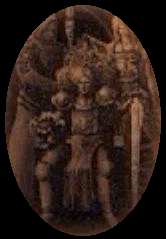
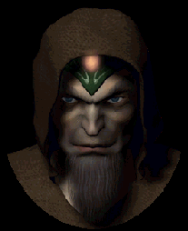
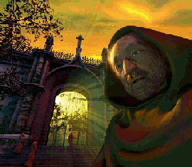
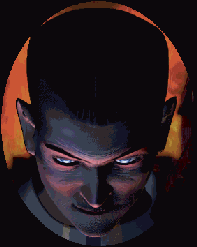

17/07/2001
17/07/2001
-
DISPEL - "POWR”T BOG”W"
|  |
POS£UCHAJ, M”J SYNU, TEJ OPOWIEåCI...
PEWNEGO RAZU BOGOWIE STORZYLI
KONTYNENT DMAN, A WRAZ Z NIM
LUDZKIE ISTNIENIA. LUDZIE ØYLI TAM
W POKOJU, A BOGOWIE DOSTARCZALI IM
WSZYSTKIEGO, CZEGO BY£O IM POTRZEBA:
TRAWY, DRZEW, PTAK”W... BOGOWIE
BYLI ZADOWOLENI ZE SWEGO CZYNU.
JEDNAK W MIAR UP£YWU CZASU
LUDZIOM ZNUDZI£ SI POK”J NA åWIECIE.
ZNIENAWIDZILI SI NAWZAJEM
I D•ØYLI DO WOJNY... ZRUJNOWALI
åWIAT DANY PRZEZ BOG”W !
HMM... TERAZ JUØ WIESZ JAK G£UPI
POTRAFI• BY∆ LUDZIE.
|  |
BOGOWIE PRZESTRASZYLI SI SWEGO DZIE£A
STWORZENIA, A NIEKT”RZY Z NICH CHCIELI JE NAWET
ZNISZCZY∆.INNI JEDNAK WOLELI POCZEKA∆ W NADZEI,
ØE LUDZI ZM CZY W£ASNA G£UPOTA.
W”WCZAS STA£O SI NAJGORSZE. B”G ZNISZCZENIA
HARASS, KT”RY NIENAWIDZI£ LUDZI, ZSZED£ DO DMAN
I ROZPOCZO£ RZEè. B”G TWORZENIA VARA UDAREMNI£
JEDNAK DOKANANIA ZNISZCZENA I WYZWA£ HARASSA
NA POJEDYNEK. WALKA MI DZY LUDèMI
ZAPOCZ•TKOWA£A WALK BOG”W. NIEBO STA£O SI
CZARNE, A MORZE SP£YN £O KRWI• Z DMAN.CIEMNOå∆
I åMIER∆ ZAPANOWA£Y NA ZIEMI.
Z POCZ•TKU WOJNA BOG”W WYDAWA£A SI
NIE MIE∆ KO—CA, CHOCIAØ B”G MOCY GID STWORZY£
KAMIENNEGO GIGANTA ZWANEGO GALGADOLEM; JEGO
SI£A BY£A WI KSZA NIØ MOØESZ SOBIE WYOBRAZI∆.
OBECNOå∆ GIGANTA DAWA£A HARASSOWI PRZEWAG
I MOG£A PRZECHYLI∆ SZAL ZWYCI STWA NA JEGO
STRON . NIEOCZEKIWANIE JEDNAK HARASS ZOSTA£
RZUCONY NA KOLANA I UWI ZIONY GDZIEå NA DMAN
PRZEZ HALOMA, KT”RY PRZYLECIA£ NA BIA£YM SMOKU.
TYM SAMYM PRZYMIERZE BOG”W PRZEPA£O.
PO TYM WSZYSTKIM VARA POCZU£ WIELKI ØAL PO
STRACIE WSZYSTKICH DUSZ. DLATEGO STWORZY£ OBECNY
L•D ZWANY ELOHIM I ZABRA£ TAM JEDNEGO WYBRA—CA.
POZOSTALI BOGOWIE R”WNIEØ SI TAM PRZENIEåLI.
RESZTA LUDZI POZOSTA£A NA DMAN JAK TY I JA.
TO NIE WSZYSTKO. PRZEPOWIEDNIA M”WI, ØE HARASS
POWR”CI, GDY DMAN B DZIE PE£NE LUDZI.
W ISTOCIE JEST TO STRASZLIWA KL•TW, KT”R• LUDZIE
S• NAPRAWDE PRZERAØENI. NA SZCZ åCIE VARA
Z£OØY£ OBIETNIC , ØE GDY HARASS POWR”CI,
ELOHIM - OBIECANY L•D - ZOSTANIE DLA NAS OTWARTY.
S£UCHAJ M”J SYNU, MOJE DROGIE DZECI !
åNI O ELOHIM PRZEZ CA£Y CZAS.
TAM NIE MA CIERPIE—, GNIEWU I B”LU. CZEKA TAM NA
NAS TYLKO MI£Oå∆.
TAK... MOJA BABCIA WIELOKROTNIE OPOWIADA£A
T HISTORI , ZANIM åMIER∆ ZAMKN £A JEJ OCZY.
Rozdzia≥ I. "åwit"
Na poczπtku by≥a ciemnoúÊ i istnia≥ tylko BÛg Absolutny.Stworzy≥ trzech bogÛw: Boga Tworzenia, Boga Istnienia i Boga Zniszczenia. Stworzy≥ takøÍ wielu innych, KtÛrzy mieli asystowaÊ tym trzem. Wtedy by≥ zadowolony. Dman by≥o dzie≥em trzech bogÛw. Stworzyli øycie na kontynencie, korzystajπc z mocy Boga Absolutnego. Stworzyli cz≥owieka.
Cz≥owiek jest jedny w swoim rodzaju wúrod boskich tworÛw. WyrÛønia siÍ wyjπtkowπ zdolnoúciπ adaptacji. Wie, jak siÍ rozmnarzaÊ i zagospodarowywaÊ Dman. Jednak szybko siÍ mÍczy spokojnym øyciem. ZdolnoúÊ adaptacji dana mu przez bogÛw sprawia, øe moøe mieÊ kontrole nad s≥abszymi istotami. W koÒcu ludzie zaczynajπ walczyÊ miÍdzy sobπ, ale nie po to, øeby przetrwaÊ, ale tylko dla zaspokojenia absurdalnego pragnienia w≥adzy. Potrafiπ zabijaÊ innych, øeby osiπgnπÊ swÛj cel. Bogowie mieli dylemat: jedni zamierzali pozostawiÊ ludzi samym sobie, a inni - zniszczyÊ.
Wtedy niespodziewanie BÛg Zniszczenia Harass zmiÛt≥ z powierzchni ziemi ludzkie miasto. Od tego czasu zaczÍli siÍ k≥ÛciÊ. Podzielili siÍ na dwa obozy: po jednej stroni by≥ BÛg Tworzenia Vara i BÛg Istnienia Numa, a po drugiej BÛg Zniszczenia Harass. Rozpoczπ≥ siÍ wielki konflikt, ktÛry zrujnowa≥ Dman. Gdy BÛg Mocy Gid, ktÛry by≥ po stronie Harassa, stworzy≥ giganta Galgadola, zwyciÍstwo ciemnej strony wydawa≥o siÍ nieuchronne.
Wtedy BÛg Snu Halom, syn Vary, wyúni≥ smoka. To by≥ olúniewajπcy Bia≥y Smok. Vara i Halom sworzyli wiele potÍønych smokÛw, ktÛre walczy≥y z Galgadolem. WktÛtce pokona≥y Galgadola, a Bia≥y Smok zniszczy≥ Harassa.
Po wojnie wielu bogÛw opuúci≥o Dman lub zosta≥o wypÍdzonych za wzniecanie wojny. ZwyciÍzcy otoczyli opiekπ ocala≥ych ludzi. Bogowie czuli siÍ odpowiedzialni za znidzczenie Dman i zag≥adÍ wielu istnieÒ z powodu ich uprzedzeÒ. Dlatego wkrÛtce potem zdecydowali siÍ opuúciÊ Dman. Teraz ludzie otrzymali pozwolenie na kontrolowanie w≥asnego øycia.
|  |
Rozdzia≥ II. "Za≥oøenie åwiÍtego Biskupstwa"
Po wojnie ludzie wzieli w swoje rÍce wszystkie sprawy w Dman, gdzie odradza≥o siÍ øycie. ZaczÍli siÍ przemieszczaÊ i tworzyÊ nowe nacje. W koÒcu w Dman powsta≥y trzy potÍøne krainy. W sercu Dman, wokÛ≥ gÛry Kardia, leøy kraina Aesh, gdzie kwitnie g≥Ûwnie øycie kulturalne. Na pÛ≥nocy powsta≥a kraina Shereg, ktÛra s≥ynie z magii i úladÛw obecnoúci bogÛw; to centrum edukacji mÍdrcÛw i magÛw. Na po≥udniu w trzeciej krainie mieszka nacja zwana Yam. Na kontynencie Dman powsa≥o jeszcze kilka innych nacji, jednak znik≥y rÛwnie szybko, jak siÍ pojawi≥y.
Historia Dman tak naprawdÍ rozpoczÍ≥a siÍ od podzia≥u kontynentu miÍdzy trzy potÍøne nacje. Jednak aby utrzymaÊ pokÛj, potrzebowa≥y rÛwnie potÍønej organizacji, zdolnej pokierowaÊ wzajemnymi stosunkami. Za≥oøy≥y wiÍc Watykan, a w nim åwiÍte Biskupstwo, wierzπc, øe wspÛlna religja i wiara w tych samych bogÛw zapobiegnπ ewentuanym konfliktom. Wszystkie niezgodnosci i problemy by≥y odtπd rozpatrywane przez åwiÍte Biskupstwo. Takie rozwiπzanie okaza≥o siÍ pe≥nym sukcesem i na d≥ugi czas zapewni≥o pokÛj na kontynencie.
|  |
Rozdzi≥ III. "Bohater papieøem"
SpokÛj zak≥Ûci≥o jednak pewne wydarzenie. Nieznana si≥a obudzi≥a Galgadola, úpiπcego w ruinach dawnej siedziby bogÛw w úrodkowym Aesh. Zaczπ≥ zabijaÊ kaødego, kogo zobaczy≥, i nikt nie mÛg≥ go powstrzymaÊ. Nawet ludzie Koúcio≥a i magowie nie zdo≥ali zapobiec destrukcji.
Watykan zwo≥a≥ nadzwyczajnπ radÍ, ktÛra mia≥a negocjowaÊ z Galgadolem. Na spotkanie z nim wys≥ano najwspanialszych rycerzy, øo≥nierzy i magÛw. Niestety, ich ofiarnoúÊ nie powstrzyma≥a giganta stworzonego przez Boga Mocy Gida.
Gdy wydawa≥o siÍ, øe nie ma juø sposobu na Galgadola, do Watykanu przyby≥ m≥ody ksiπdz imieniem Piach. W sobie tylko znany, magiczny sposÛb, zabi≥ i poÊwiartowa≥ Galgadola.
M≥ody ksiπdz zosta≥ obwo≥any úwiatowym bohaterem i otrzyma≥ posadÍ w Watykanie u boku papieøa. Dalej wypadki przybra≥y nieoczekiwany obrÛt. WkrÛtce po przybyciu Piacha do Watykanu znaleziono martwego papieøa Shan Chkela. Nie by≥o jednak dowodÛw morderstwa. Najlepszym i jedynym kandydatem na jego miejsce okaza≥ siÍ m≥ody ksiπdz, poniewaø wszyscy inni, ktÛrzy mogli zajπÊ to stanowisko, zostali zabici przez Galgadola. Zatem Piacha wybrano nowym papieøem.
Ludzie cieszyli siÍ z tego wyboru. Jednak w miarÍ up≥ywu czasu w Watykanie zaczÍ≥y siÍ dziaÊ dziwne rzeczy. Piach jako papieø mia≥ w≥adzÍ absolutnπ i mÛg≥ robiÊ w zasadzie wszystko, na co mia≥ ochotÍ. Najpierw ograniczy≥ nauki teologiczne. Wyda≥ zakaz badania pozosta≥oúci po czasach bogÛw wszystkim, ktÛrzy nie mieli zezwolenia åwiÍtego Biskupstwa. Ludzie wystÍpujπcy czynem i s≥owem przeciwko papieøowi byli mordowani bez wzglÍdu na nacjÍ. Wprawdzie Aesh, Yam i Shereg prÛbowa≥y siÍ przeciwstawiÊ rzπdom, Piacha, ale okaza≥y siÍ nie doúÊ silne wobec potÍgi Watykanu. SzczegÛlnie ludnoúÊ Aesh by≥a nastawiona wrogo do åwiÍtego Biskupstwa, jednak nie mog≥a nic zrobiÊ, poniewaø Watykan by≥ czÍúciπ krainy Aesh.
Niegdyú Piach by≥ úwiatowym bohaterem, ktÛry usunπ≥ Galgadola. Dziú jest najwiÍkszym na úwiecie ≥ajdakiem.